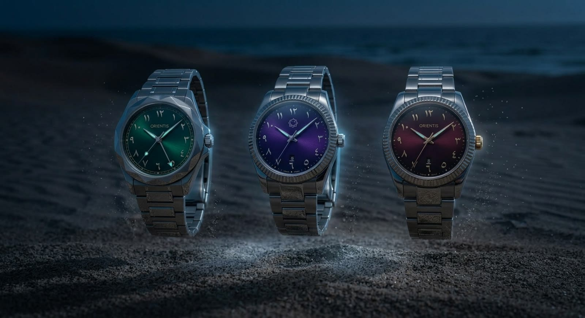
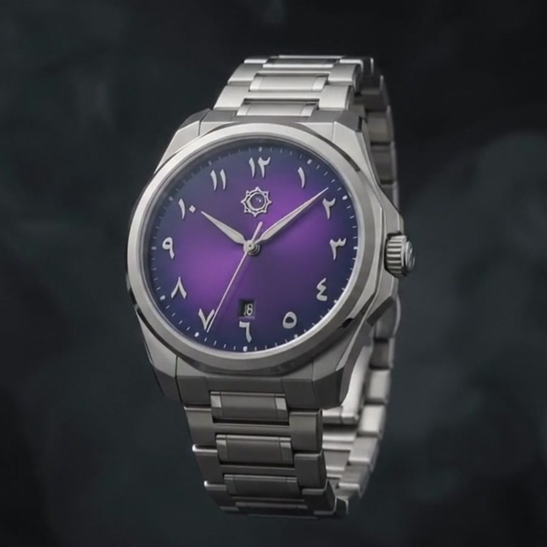
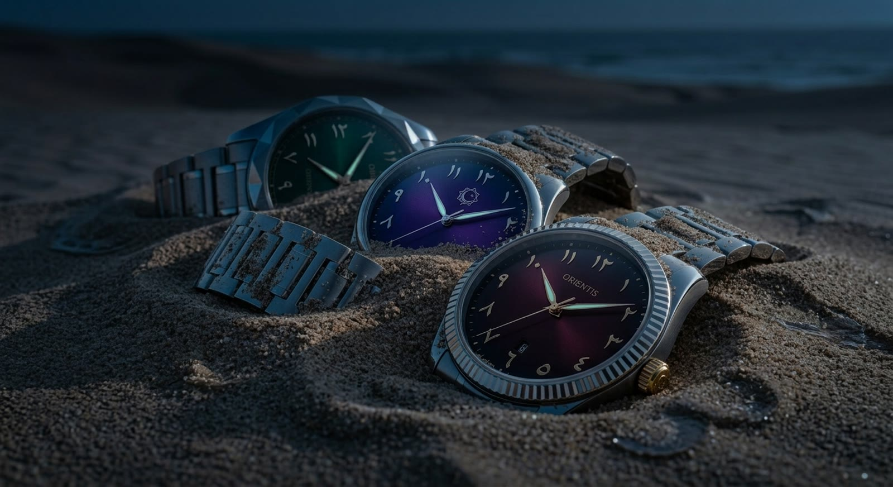
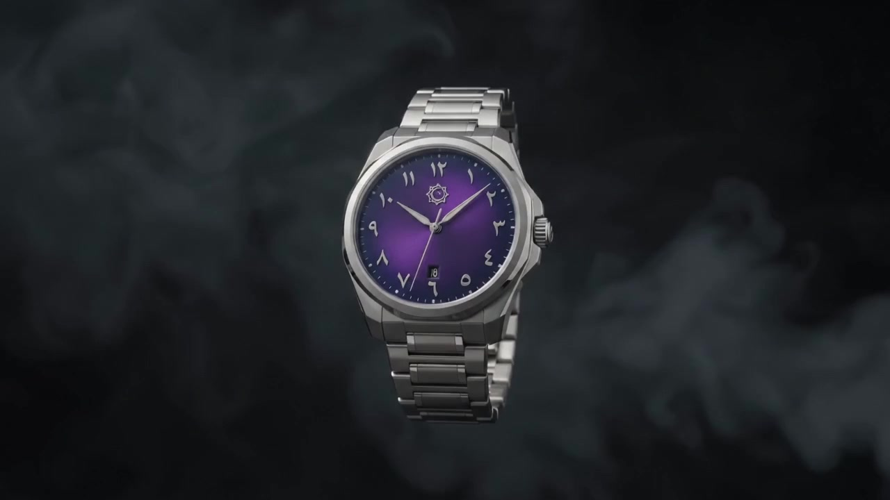

Référence OR·01
ORIENTIS I
ORIENTIS I
Améthyste
Le soleillé violet qui a fondé la maison. Orchidée le jour, indigo dans l'ombre.
Prendre rendez-vous→Le temps, épuré.
Il arrive sans un mot. Acier brossé, un horizon violet sous le saphir, l'autorité tranquille d'un objet conçu pour survivre à celui qui le porte.
Le saphir cède, le cadran se libère. La discipline sous la surface commence à se donner à voir.
Boîtier, mouvement, cadran, verre, bracelet — l'objet se déplie, comme un dessin retient un bâtiment avant qu'il soit bâti.
La gravité fait le reste. Chaque pièce vient reposer dans l'obscurité — et l'objet que vous convoitiez est désormais un objet que vous comprenez.
Le même boîtier monobloc, le même calibre OR·M1. Seule la lumière du cadran change — et avec elle, tout le reste.
Le soleillé violet qui a fondé la maison. Orchidée le jour, indigo dans l'ombre.
Prendre rendez-vous→Une lumière pâle, comme le sable avant l'aube. La plus discrète des trois.
Prendre rendez-vous→Grenat profond, presque noir. Elle ne se livre qu'à la lumière directe.
Prendre rendez-vous→
Photographiées ensemble sur le rivage, à la tombée de la nuit. Puis séparées — chacune vers son unique acquéreur.

Soleillé violetDes chiffres arabo-indiens flottent sur un soleillé violet qui glisse de l'orchidée à l'indigo profond selon la lumière. En son centre, l'emblème ORIENTIS — une géométrie à huit pointes empruntée aux khatam des cours intérieures.
Chiffres conceptuels — ORIENTIS est une maison fictive.
La philosophie ORIENTIS
ORIENTIS repose sur une seule conviction : la logique d'un mouvement mécanique et celle de l'ornement islamique sont une même logique — modulaire, exacte, infinie dans un cadre. La montre est le lieu où les deux se rencontrent, au poignet.

Enfouie puis retrouvée, elle donnera encore l'heure juste. C'est la seule promesse qu'ORIENTIS ait jamais faite.

La première série se découvre uniquement sur rendez-vous, dans une seule pièce, à ceux qui la demandent. Il n'y a pas de liste d'attente — seulement une conversation.